2.2.2. Inserting Basic Lecture Elements
After the user created a lecture file as shown here, the instrutor can then go to the 'Insert Lecture' window to start creating the lecture. If the window is not already on the screen, the user can open up the window through the task bar as demonstrated here.
When the 'Insert Lecture' window is up, the user will see a dialog similar to what is shown on Figure 9.
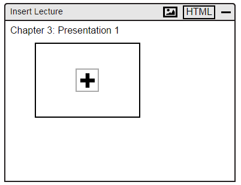
Figure 9: Insert Lecture.
The newly created lecture will have no slides. To add a slide, the user can click on the '+' button located in the middle of the box. When the user clicks on the '+' button, the EClass program responds by creatinga new slide and labeling it as slide 1 as shown in Figure 10. To add more slides to the lecture, the user can continue to click on the '+' button.
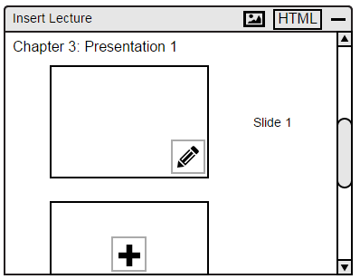
Figure 10: Adding a Slide.
2.2.2.1. Adding Content to Lecture
To edit a slide, the user can click on the pencil box, located at the bottom left of the slide. Once the user clicks on that button, the system will display a new screen as shown in Figure 11.
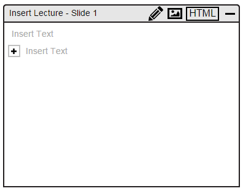
Figure 11: Editing Lecture - Main View.
When the system opens the new window, the slide the user is trying to edit will be raw. If user wants to use a multilevel list, the user can select the pencil icon on the top right corner. Once the user has selected the pencil icon, a box will pop up with different types of multilevel list to choose from as shown in Figure 12.
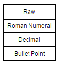
Figure 12: Menu of different types of Multilevel lists.
Raw: Allows user to insert text with no multilevel list style.
Roman Numeral: Allows user to insert text with a Romal Numeral multilevel list style (e.g. I, A, 1, a....II...)
Decimal Allows user to insert text with a Decimal multilevel list style (e.g. 1, 1.1, 1.1.1....2, 2.1...)
Bullet Point: Allows user to insert text with a Bullet Point multilevel list style (e.g. disc, circle, square...)
Figure 13 demonstrates the different types of multilevel list available for the user.
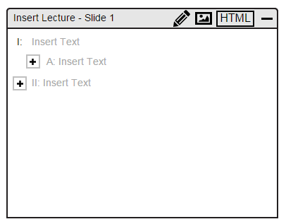
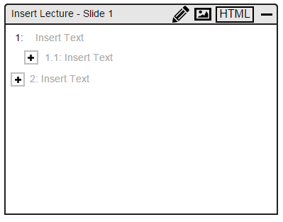
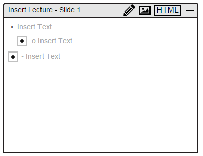
Figure 13, 14, 15: Types of multilevel lists.
To add text to the lecture, the user can just double click on the '+' button and it will be available to edit. Once the user selects the '+ button, a new subtopic will pop up and be available to edit. The user will be able to change the style of topic ordering. Figure 16 and Figure 17 demonstrates adding text to the lecture slide.
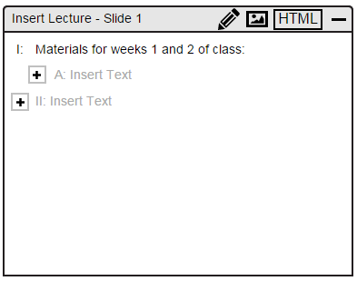
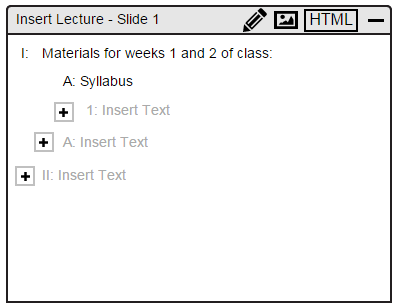
Figure 16, 17: Adding Texts to Lecture Notes.
2.2.2.2. Inserting an Image to Lecture
To insert an image to a lecture slide, the user must first select under which line the image should be under as shown in Figure 18. If the slide is blank, there is no need to select anything.
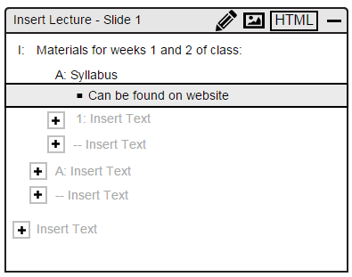
Figure 18: Selecting Line to Add Image Under.
Then, the user will need to click on the image icon on the top right corner. That will lead to a pop up a window to select an image from your local computer as shown in Figure 19.
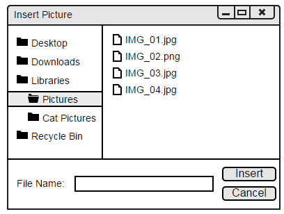
Figure 19: Insert Picture Window.
The user will then have the ability to navigate through the local computer's files to find the right image to add into the lecture slide. Once the image is found, the user then needs to select the image as shown in Figure 20. When the user selects the wanted image, the window will highlight the image name.
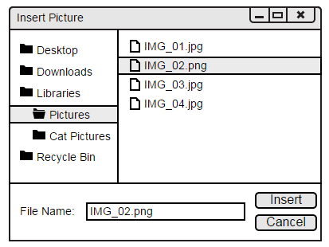
Figure 20: Selecting an Image.
Once the user selects the wanted image, all the user needs to do is click the 'Insert' button at the bottom right of the window. When the user presses the button, the image will then show in the lecture slide as shown in Figure 21.
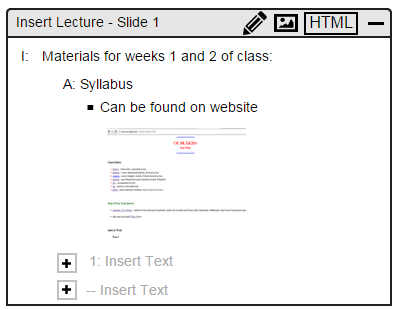
Figure 21: Added Image in Lecture Slide.
Prev: new-lecture
| Next: import-lecture
| Up: lecture-notes
| Top: index